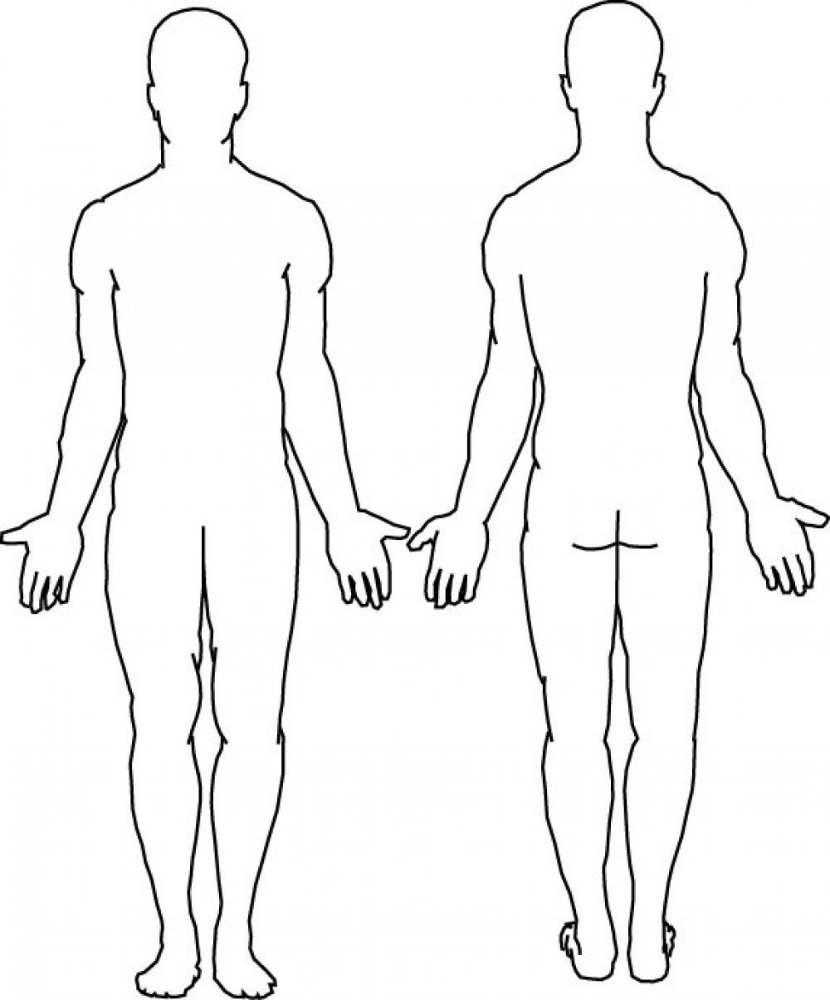

<div class="mat-container">
    <h2>Symptoms</h2>
    
</div>

<button mat-raised-button routerLink="/vitals" color="accent" float="left">Back</button>
<button mat-raised-button routerLink="/info" color="primary" float="right">Add Personal Info</button>
<button mat-raised-button routerLink="/scanner" color="warn" float="right">Submit</button>